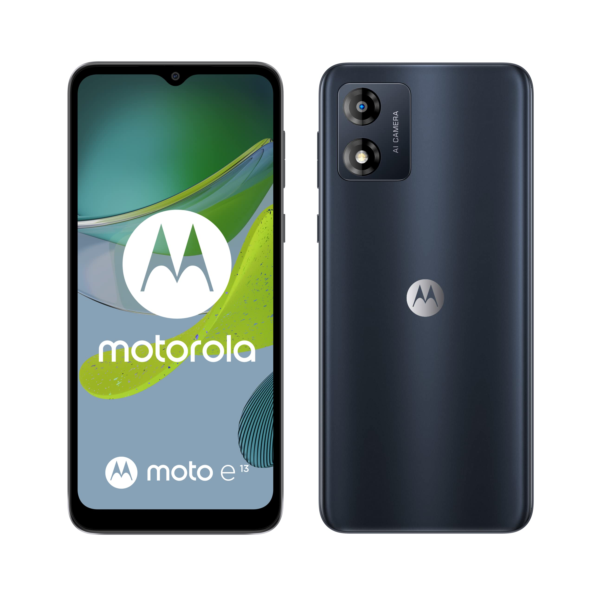

Moto E13
El Moto E13 está diseñado para usuarios que buscan lo esencial: llamadas, mensajería, redes sociales y algo de navegación. Cuenta con Android Go, una versión optimizada para dispositivos con recursos limitados, y una batería de 5000 mAh que asegura una larga duración.
Más información

Realme C51
Destaca en su categoría por su pantalla de 6.74 pulgadas con tasa de refresco de 90 Hz, algo poco común en la gama baja. Su batería de 5000 mAh con carga rápida de 33W y un diseño moderno lo hacen ideal para jóvenes o usuarios con necesidades básicas que valoran la estética.
Información